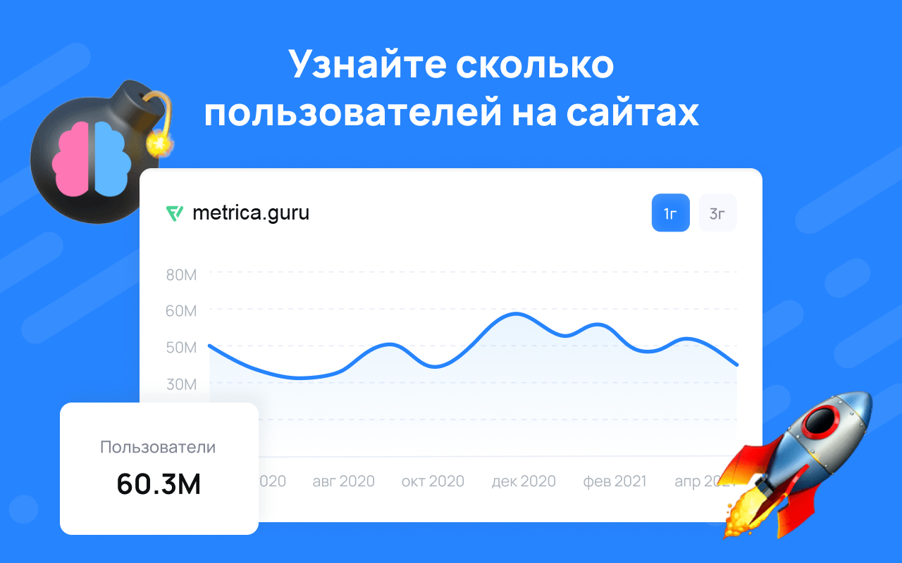

Полезные расширения и программы

Metrica - расширение браузера Chrome, Brave. Самое полезное расширение для исследования криптовалют, перед инвестированием.
Помогает узнать сколько человек посещает официальный сайт монеты, много или мало.
Просто нажимаете на значок расширения в браузере находясь на сайте и график статистики появляется прямо в расширении,
а так же можно нажать кнопку перейти насайт чтобы увидеть развернутый большой график с расширенным периодом в 3 года.
Установить расширение Metrica из магазина расширений Гугл Хром
Аутентификатор 2FA - расширение браузера Chrome, Brave для защиты торгового аккаунта от взлома.
Сейчас почти все криптобиржитребуют включения 2FA для безопасности, которое обычно устанавливается на смартфон, что не очень удобно,
нужно сначала найти его, разблокировать экран, запустить приложение, потом прочитать код и ввести его вручную.
А с расширением для браузера намного проще, просто ставите курсор в поле ввода кода, нажимаете мышкой на значек расширения и потом еще один клик по коду и код уже стоит в водимом поле.
В настройках есть сохранение резервной копии всех ключей авториизации добавленных в расширение.
Обязательно сохраняйте резервую копию на нескольких устройствах, что бы не потерять доступ к сайтам и не мучиться потом с восстановлением доступа (для хранения нет ничего лучше старых оптических дисков с внешним приводом).
Установить расширение Аутентификатор 2FA из магазина расширений Гугл Хром
FydeOS - крутая минималистичная ОС основанная на ChromeOS с очень красивым современным дизайном.
Поддержка Android приложений APK и Google Play.
Встроенный магазин FydeOS безопасных приложений без вирусов с быстрой установкой без кучи диалоговых окон.
Поддержка Linux приложений.
Нет дурацких внезапных неотключаемых обновлений, обновление только с полной переустановкой.
Нет неотключаемых антивирусов живущих своей жизнью и тратящих ресурсы.
Нет реестровой системы как в Windows, в которой накапливаются остатки программ, приложения удаляются без следа как на андроид.
Никаких вотермарков активации на рабочем столе, полностью бесплатная для домашнего некомерческого использования.
Встроенный AI помощник.
Талантливый разработчик постоянно улучшает FydeOS, добавляет новые функции, но опять же все обновления только через полную установку и беспокоить не будут.
Для трейдинга лучшая OS и не только, есть официальный Steam, а игры для Windows с прослойкой Proton не редко работают с большим FPS чем на оригинальной платформе.
Потребляет меньше ресурсов и особенно полезна для старых слабых компьютеров.
Идеально подходит для набирающих популярность мини пк.
Скачать FydeOS с официального сайта
ChatGPT - ИИ который очень помогает в трейдинге, информация, обучение, моделирование плюсового математического ожидания стратегий с графиками.
Перейти на сайт ChatGPT
Для доступа к сайту необходим VPN.